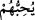
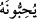

vardır. Ona cehl-i basît denilir. Bir de kuvvetli olan cehâlet vardır. O da cehl-i
mürekkebdir ki bu cehâletin sâhibi bilmediğini de bilmez. Onun için de öğrenmekten
mahrum kalır. Bundan dolayı onun bilgisizliği güçlüdür.
el-İrşâd’da der ki: “Doğrusu o çok zâlim, çok câhildir” sözü, emâneti yüklenmekle
bu yüklenme gayesi arasına girmiş bir ara cümledir. Bu, daha ilk baştan emâneti
yüklenen bu insanın sözüne ve yüklendiği emânete vefâsı olmadığını bildirmek içindir.
Yâni insan zulümde çok ileri gitmiş ve câhillikte aşırılığa kaçmıştır. Bu durum, selim
fıtratlarının ve ruhlardan ahid ve mîsak alındığı gündeki ahidlerinin gereğiyle amel
etmeyen ferdlerinin çoğunluğu îtibarıyladır. Yoksa Allâh’ın fıtratını değiştirmeyip ahid
ve mîsak günündeki “belâ (evet)” sözleriyle îtiraf ettikleri durum üzere yürüyenler
böyle değildir.”
Bazıları şöyle demiştir: “İnsan çok zâlim, çok câhildir” demek, zulüm ve cehâlet
insanın şanındandır, demektir. Nitekim “Su tertemizdir” demek, temizlik suyun
şanındandır, demektir.
Bilesin ki zâhir ehline göre bu zâlimlik ve câhillik yerme sıfatlarıdır. Çünkü bu iki
sıfat emânete hıyânet edenler hakkındadır. Kim ihânet ve hiyâneti, vefâ ve emâneti edâ
yerine koyarsa elbette zulmetmiş ve câhilce davranmış olur.
Keşfü’l-esrâr’da der ki: “Halkın âdeti şudur: Birisinin yanına değerli bir emânet
bıraksalar, üzerine bir mühür koyarlar. Geri istenildiğinde mührü incelerler; eğer mühür
yerinde ise o kimseyi överler, tebrik ederler. Senin yanına da “Ben sizin Rabbiniz
değil miyim?” (el-A‘râf, 7/172) ahdinin alındığı bir emânet bırakıldı ve üzerine mühür
basıldı. Ömür sona erip de mezara götürüldüğünde melek gelir ve sana: “Rabbin
kimdir?” diye sorar. Bu soruyla, o ilk günkü vurulan mührün yerinde mi yoksa değil mi
olduğu araştırılır.
Hâfız der ki:
Ezel sabahından ebed akşamına dek
Dostluk ve muhabbet, aynı ahid ve aynı mîsâk üzeredir.
Hakîkat ehli ise bu zâlimlik ve câhillik, emâneti edâ edenler hakkında övme
sıfatlarıdır, demişlerdir. Çünkü insan emâneti yüklenmekle kendi nefsine zulmetmiştir.
Çünkü insan böylece bir şeyi kendi yerinden başkasına koymuş; nefsini ifnâ etmiş/fânî
kılmış, enâniyyet diye bilinen varlığa dâir perdelerini izâle etmiş ve Rabbi’nden
gayrısının câhili olmuştur. Çünkü insan işin başında kendisini, yiyen, içen, evlenen ve
bütün canlıların müşterek olduğu erkeklik ve dişilik vasıflarını taşıyan bu
canlı/hayvandan ibâret zanneder. Bu hayvânî sûretin kendisinin kabuğu olduğunu, bu
kabuğun da bir özü/lübbü bulunduğunu ve bu özün de insanın rûhu olduğunu bilmez.
Yine insan bilmez ki rûhu da bir kabuktur ve onun da bir özü vardır. Bu öz ise Hakk’ın
mahbûbu/sevgilisi olup hakkında “
(Allah onları sever)” (el-Mâide, 5/54)
buyurduğu şeydir. O öz de Hakk’ı sever/O’nun muhibbidir ki Allah onun hakkında “